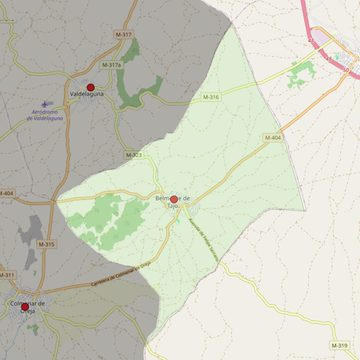

Nuestra Señora de la Estrella
- Arciprestazgo
- Chinchón
- Población
- Belmonte de Tajo
- Dirección postal
- c/ Espíritu Santo, s/n
- Código postal
- 28390
- Extensión
- 24,04 km² (2.404 ha)
- Teléfono
- 918 747 577
- Correo electrónico
- nsestrella-belmonte@diocesisgetafe.es
- Información demográfica
- De la parroquia · De la población (Belmonte de Tajo) · Del arciprestazgo (Chinchón)


Descargar mapaLímites según decreto
Los del término municipal